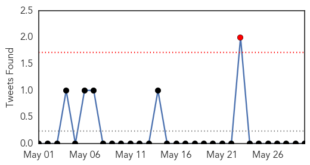
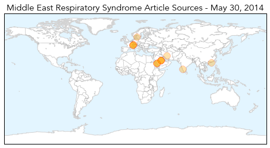
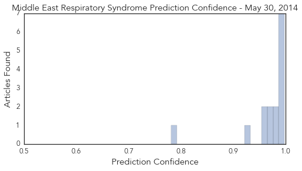
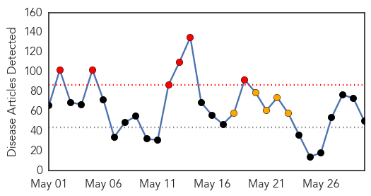
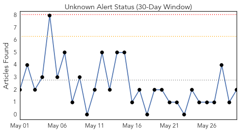
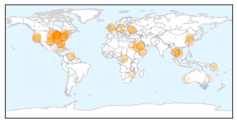
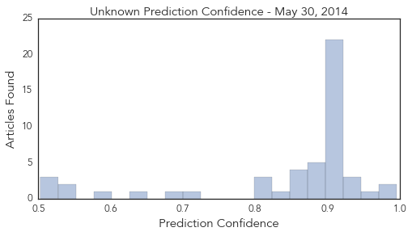

MERS
30-Day Web Trend
5 alerts, 7 warnings

30-Day Twitter Trend
1 alerts, 0 warnings

Article Locations
Article Confidences
Top Articles:
- 0.998
- Traveller with fever tests negative for MERS-CoV
- 0.997
- Screening of passengers begins at airport
- 0.994
- Scientists find compound to fight virus behind SARS, MERS
- 0.994
- Iran announces first MERS death
- 0.994
- Mers research breakthrough raises glimmer of hope
- 0.992
- Saudi Arabia cites one MERS case; Iranian patient dies
- 0.989
- Scientists find coronavirus inhibitor blocking MERS and SARS — RT News
- 0.982
- Iran reports first person killed by Mers virus in country
- 0.981
- Iran reports its first death from MERS virus
- 0.971
- Deadly virus spread to Indiana hasn't spread further
- 0.971
- Scientists Find Compound To Fight Virus Behind SARS and MERS
- 0.963
- Iran reports its first death from MERS virus
- 0.962
- Scientists find compound to fight MERS
- 0.922
- In MERS scare, hospitals lose business to pharmaciesHealthcare
- 0.781
- New coronavirus inhibitor exhibits potent antiviral activity
Top Tweets:
-
No tweets found for May 30, 2014
Unknown
30-Day Web Trend
6 alerts, 5 warnings

30-Day Twitter Trend
0 alerts, 0 warnings

Article Locations
Article Confidences
Top Articles:
- 0.996
- Saudi health minister says working with WHO to fight MERS
- 0.992
- Experts warn of Heartland Virus after man’s death
- 0.956
- Family: 76-year-old Grove man was virus victim
- 0.942
- Iran Reports Its First Death From MERS Virus
- 0.941
- UAB, health dept. release more info on reporting of legionella o
- 0.939
- Iran Reports Its First Death From MERS Virus
- 0.917
- Chicago Tribune
- 0.917
- Chicago Tribune
- 0.917
- Chicago Tribune
- 0.917
- Chicago Tribune
- 0.917
- Chicago Tribune
- 0.917
- Chicago Tribune
- 0.917
- Chicago Tribune
- 0.917
- Chicago Tribune
- 0.917
- Chicago Tribune
- 0.917
- Chicago Tribune
- 0.917
- Chicago Tribune
- 0.917
- Chicago Tribune
- 0.917
- Chicago Tribune
- 0.917
- Chicago Tribune
- 0.917
- Chicago Tribune
- 0.917
- Chicago Tribune
- 0.917
- Chicago Tribune
- 0.917
- Chicago Tribune
- 0.917
- Chicago Tribune
- 0.910
- The world windows to Thailand
- 0.910
- The world windows to Thailand
- 0.908
- New approach could lead to more effective HIV vaccine
- 0.883
- KRNV, Reno, NV
- 0.883
- KRNV, Reno, NV
- 0.883
- KRNV, Reno, NV
- 0.883
- KRNV, Reno, NV
- 0.880
- UN releases $13.1m for flood relief work
- 0.866
- No full Russian withdrawal from Ukraine border yet
- 0.866
- Russian PM says Ukraine informed it of partial gas payments
- 0.866
- Firefighters try to extinguish a forest fire at a tourism resort in Weihai, Shandong province
- 0.866
- Two killed after peacekeepers clash with gunmen in C.African Republic
- 0.828
- Egypt fights malaria outbreak in Aswan: Official
- 0.810
- Snowy winter did not hurt ticks in Minnesota
- 0.801
- Dr. Gayle Bradshaw Honors Stroke Awareness Month and Reminds Patients in The Woodlands, TX of the Link Between Periodontal Disease and Stroke
- 0.799
- May 29, 2014 (Investigation Announcement) Multistate Outbreak of Salmonella Newport Infections Linked to Organic Sprouted Chia Powder
- 0.710
- Rabid Bobcat in Found in Littleton Prompts Call for Animal Vaccinations
- 0.700
- Lyme Disease Is Really Really Old
- 0.637
- Trial set for world’s first leprosy vaccine
- 0.588
- Zimbabwe Official: Fewer Condoms Means More Soldiers
- 0.541
- Public health officer backs call for greater independence
- 0.535
- When Cancer Isn't Just a Word: Translating Medicine's Native Language
- 0.527
- Patient flow problems at QHC
- 0.503
- Bad experiences stop lyme disease sufferers seeking help
- 0.503
- Bad experiences stop lyme disease sufferers seeking help
Showing top 50 articles...
Top Tweets:
- 0.753
- Flu Fact Friday: The common name for the H7N9 virus is the Avian Flu.
- 0.608
- se nota que es fín de mes, me paso un tren por encima... O solo fueron 9 horas de trabajo? 😵